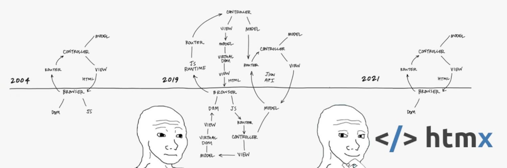

Software Simplicity Movement

Born from the chaotic cauldron of modern frontend development and rage against the cloud, the software simplicity movement, as I have taken to call it, does raise many points which I agree with.
# Complexity
Main point is that software development has gotten needlessly complex. This most clearly manifests as cargo culting React and SPA technologies in general to use-cases where they are clearly not required nor warranted. One such example is a simple CRUD page, sending and displaying data from a database on a webpage as HTML. That's all it does. What functionality React adds to that primary function? Nothing. But credit where credit is due, it does add two nice tricks: an ability to do partial page reloads thanks to virtual DOM, and you can trigger requests on any action.
However, those two nice tricks come with a heavy price. Where you before only had to concern yourself with connecting your HTML pages to the backend and directing links to new HTML pages, you now are burdened with reliance to Node, dependencies, routing, packaging, frontend logic, tooling, and your documents are no longer portable standard HTML. At first blush it may not seem like a lot, but it is. Consider the cognitive overload. It's not like you just read React docs and get things done. For starters you must account for correct plugins and settings for your development environment. Then you have to setup webpack or whatever happens to be the hottest packager of the day to account for two different workflows (develop and deploy). Simple href no longer cuts it, you need to setup routing to navigate your webpage. Each piece of the puzzle requires its own set of documentations. Then, to make things pefrormant, you have to delve into things like treeshaking, caching, and hydration. Keep in mind programmers are human too, and cognitive burden takes a toll.
Essentially, you have doubled or tripled your personal workload and for what? Partial page load and buttons not attached to form doing thing. Is it worth it?
# Maintainability
Then comes the maintenance aspect. Now, in addition to having to deal with backend pom.xml, you also have to keep up to date and deal with package.json. This again doubles your workload or more. In my experience, it's always the more. It's not only the packages you explicitly install, it's their dependencies too. node_modules ballooning to ridiculous sizes even on a medium sized project is common. Keeping up-to-date with everything happening in JavaScript land and battling with mutually incompatible versions and deprecations in package.json is a lot of work. Sometimes, a package in your project is simply deprecated. You try to upgrade everything, only to run into errors that something has been deprecated. So you revert changes, delete node_modules, and install again to restore working state. Do you leave your code to rot, spend a day devicing shrinkwrapping, or a day looking for a drop-in replacement? Then another day if you find one, smoke testing that everything still works? I have several encounters of this kind handled under my belt and it's so common I don't even remember which packages exactly. Time is money, and consulting doesn't come with cheap hourly rates. Is it worth it?
The alternative solution to this is to do away with Node. Now you only have backend dependencies to worry about and what you explicitly include in <head>.
# Performance
Treeshaking and hydration and logic. You have to jump some hoops to actually make the frontend perform nice. I've lost the count of sites where I notice particularly slow loading of some objects with the infamous grey placeholder loading animation. I fire up Wappalyzer, making bets in my mind, and it's always React. I win every time. In fact, as a performance enjoyer, these kinds of sites were my initial push starting to think something is going very wrong.
Performance matters. There have been studies done that if website isn't responsive within some seconds, visitors are likely to simply go elsewhere.
I'm old enough to well remember web sites working snappier without their base task having changed much over the years. It's ridiculous that we have gone backwards. It's ridiculous to think that LAMP stack running on servers worse than current Raspberry Pi 5 was better. Remember early Facebook? Remember early Gmail? Is it worth it?
# Real Use Cases
Of course there are cases where SPA is absolutely warranted. Highly interactive sites like Google Docs, Discord and Figma. Web games. Things like that. Where you are doing basic CRUD and navigation less than 20% of the time. Unfortunately, as Software Simplicity Movement loves to point out, the use of SPA has been cargo culted to do everything. In a way it's coming full cirlce now mostly thanks to all too slow realization that SPA does not lend well to SEO. One of the prime examples is of course Next, which purports to offload part of the appliction back to the server while keeping React niceties. Of course, that is more to learn, more to build, more to twaddle with. Is it worth it?